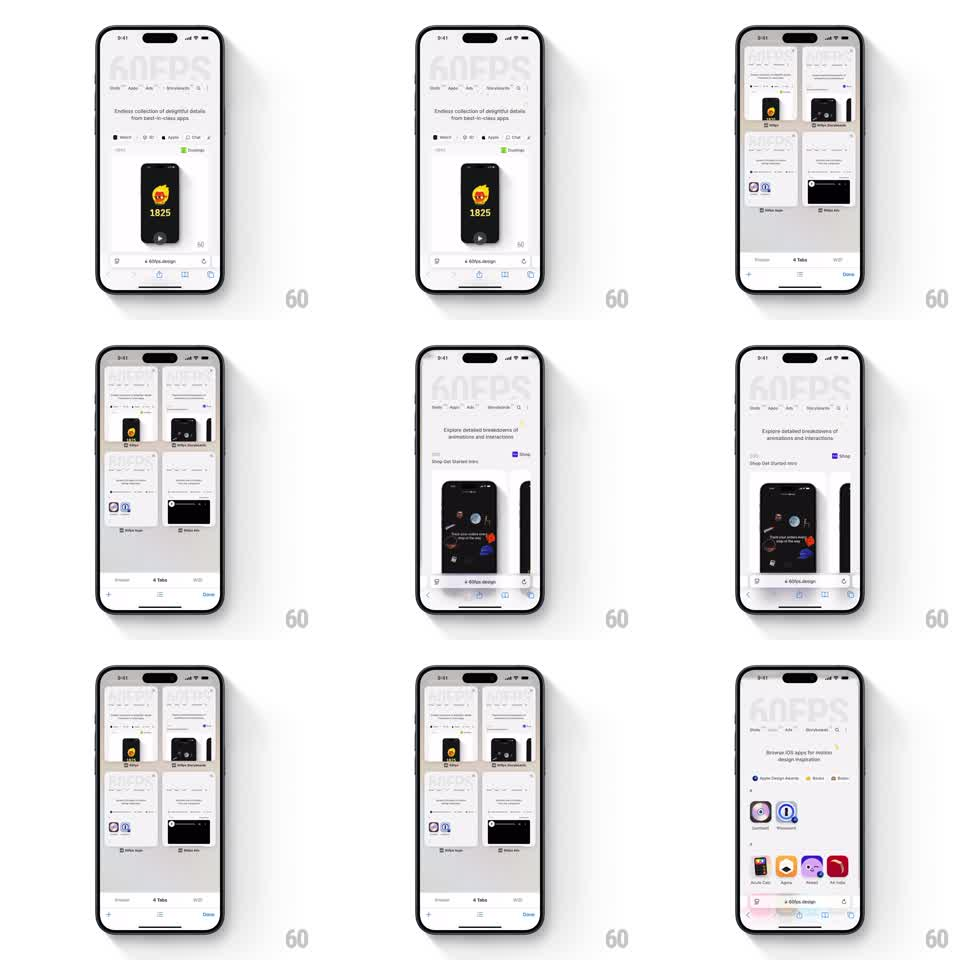

Media
Frame-by-frame

Rebuild this interaction 1:1: iOS Safari's tab switcher - the full-screen web page zooms back into a card in the 2x2 tab grid, and tapping a card zooms it back to full screen.

Rebuild this interaction 1:1: iOS Safari's tab switcher - the full-screen web page zooms back into a card in the 2x2 tab grid, and tapping a card zooms it back to full screen.
## Integration
Integration: stack-agnostic spec - springs given as stiffness/damping, timed motions as duration + curve; map every value to your framework and animation library of choice.
## Scene
Safari showing a full-screen web page with the bottom toolbar. On the tab-button tap, the page shrinks into a rounded card that flies to its slot in a 2x2 grid of tab cards ("4 Tabs" label, Private/Tabs toggle, Done button). Selecting a card reverses the motion.
## Motion spec
Pattern: zoom-to-grid transition, ~600ms.
- The live page scales down from full screen to its grid slot (350ms, ease-in-out), its corners rounding as it shrinks, the toolbar crossfading to the tab-bar chrome (250ms).
- The other tab cards are already in the grid, sliding up slightly (20px, 300ms) as the grid establishes.
- The grid scrolls vertically with standard scroll physics; cards keep live thumbnails.
- On card tap, the tapped card scales up from its grid position to full screen (350ms, ease-in-out), corners unrounding, the toolbar fading back in - a clean reversal along the same path.
- "Done" exits the switcher with the current page zooming in the same way.
## Calibration
- The same card geometry drives both directions - the zoom path is identical, just reversed.
- Cards keep their page content rendered during the shrink; no crossfade to a static thumbnail.
## Reduced motion
Crossfade between page and grid.
## Don't miss
- Corner radius animates with the scale - squared at full screen, rounded in the grid.
- The grid is 2 columns; cards in a row are y-aligned.